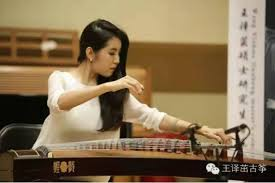

王譯茁
簡介

- 青年古箏演奏家，福建泉州人
- 哈爾濱音樂學院古箏專業教師，中央音樂學院繼續教育學院古箏教師，中央音樂學院教師資格認證主講教師
- 畢業於中央音樂學院，先後師從趙玉齋關門弟子尹長平老師，李萌老師，袁莎老師
- 個人作品：《大漠行》、《松之協奏曲》、《西楚霸王》、《禪院鐘聲》等
-
生平簡介：5歲跟隨古箏大師趙玉齋的關門弟子尹長平老師學習古箏。2003年跟隨中央音樂學院李萌教授學習古箏。2004年以第一名成績考入中國最高音樂學府，中央音樂學院附中，師從古箏演奏家，教育家袁莎，自此至中央音樂學院大學及碩士研究生的十二年間，一直潛心專修古箏專業。連續9年被中國民族器樂學會，國際古箏協會，北京樂器學會聘為中國民族藝術節“天下箏會”大型古箏古箏藝術系列活動之全國古箏藝術展演活動特邀評委。
相關網站連結
王译茁_百度百科